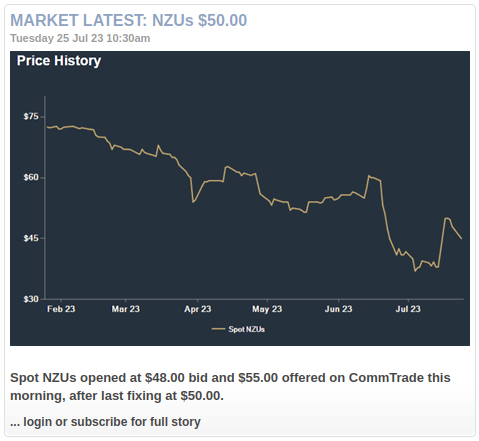
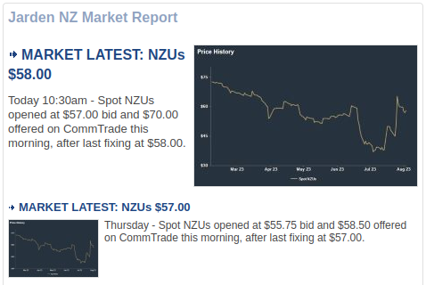
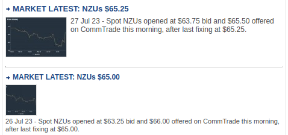
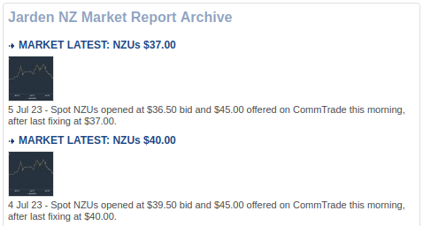
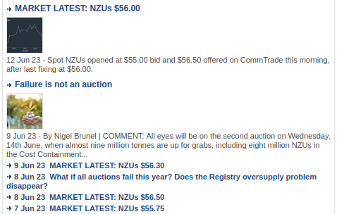

NZU price data scraping
This inaugural blog-post describes my first experience in web-scraping, which involved scraping historic price data from publicly visible snippets of a pay-walled news website. The exercise was partly motivated by @theecanmole’s GitHub repository containing manually “web-scraped” New Zealand Unit (NZU) price data from 2010 onwards. I wanted to automate the process by implementing a scraper, mostly because it seemed like a good exercise and, to the best of my knowledge, nobody else had done it before and made the code publicly available. So, feel free to look at and reuse my code, but I will not dwell on it here. Instead, I will just outline my approach in words, after providing a bit more context and dispelling any legal concerns.
NZU trading
New Zealand operates a domestic emissions trading scheme (NZ-ETS) with NZU as the standardized tradeable unit (permitting the holder to emit one tonne of CO2-equivalent). While the primary market for NZUs started functioning only in 2021, when the first public auctions were held to set the price for newly-issued NZUs, unused NZUs have been resold on platforms like CarbonMatch, CommTrade, and even TradeMe since 2010 (if not earlier). While this secondary market for NZUs has been developing for over a decade now, Carbon News and other news services have been providing comprehensive daily information on the progress, including regular updates on the market price movement.
Carbon News
Carbon News is described as “New Zealand’s only daily news service covering the carbon markets, climate change, sustainable business and the growth of the low-carbon economy”. It is a private business, so to read the published stories in full one must pay a subscription fee. However, some useful information can still be gleaned from headlines and short summaries visible to non-subscribers.
The Jarden NZ Market Report section lists recent stories focusing on the price of NZUs traded on CommTrade. Each story (such as this one) reports on the latest “fixing”, i.e. spot price, as well as the opening bid and offer prices.

Note that the price history plotted in the image accompanying each story covers only the previous six months, whereas Jarden NZ Market Report’s archive dates all the way back to 2008. To enable graphing or analyzing the entire price history, one could scrape all the publicly visible NZU prices and the corresponding dates, and save this data to a local file, e.g. a CSV file with the following format:
date,price
2023-07-24,47.25
2023-07-25,50.00Legal concerns
Carbon News website’s robots.txt indicates that only a small number of user-agents have been explicitly disallowed from crawling, whereas everyone else should just use a crawl-delay of two seconds. This allowance suggests that the website creators do not object to the publicly visible content being scraped, and I did not find any statements in the Policies and Service sections that would point to the contrary. Hence, to the best of my knowledge and understanding, I have not done anything illegal during this scraping exercise.
I am aware that CommTrade claim some unspecified copyright and state that “reproduction of any data or images on this site cannot be used without the permission of Jarden.” In fact, when I first became interested in historic data on the price of NZUs, I’ve actually emailed carbon@jarden.co.nz asking for it, and they offered it to me for a fee of $5k, but I was not willing to pay that much (if anything), and I did not feel like bargaining. Instead I turned this obstacle into an opportunity to develop my scraping skills, using a different website as my source. I felt even more validated after finding a report from Exchange Data International (EDI), which concludes:
“There is no credible basis for any stock exchange in the EU (or the US) to claim copyright in closing prices or indices. Even by the most indulgent standards, closing prices are below the standards of originality and substantiality required under copyright legislation, regardless of whether they are the product of algorithms or the actual final trading price of the day.”
I think I agree with this conclusion and hope Jarden CommTrade rethink their data policy, if they haven’t already. In any case, back to legal scraping…
Browser inspection
In general, data scraping involves parsing the HTML source code of a web page of interest, and in the present case we have two to begin with: Jarden NZ Market Report and its archive. By scrolling through these two webpages one can glean all the information required to produce the desired CSV file: the date, the price, and the story URL.


Somewhat inconveniently, the date formatting is variable: showing just “Today” or the appropriate weekday (e.g. Thursday) for stories that are less than a week old, and the date in full (e.g. “25 Jul 23”) stated only for older stories.


Much more inconvenient is the variation in how the spot price has been reported over time, systematically featuring in the headlines only since 22 Feb 2016. Extracting the spot price from hundreds of older archived stories actually requires opening and parsing the stories’ individual web pages. Adding to the inconvenience is that the format of the publicly visible summaries changed fairly inconsistently over time, especially early on, raising the question of whether it is even possible to extract all the right price values using relatively simple algorithm logic.
Using the browser’s inspection tool to examine the HTML source code of the Jarden NZ Market Report, we find a fairly tractable structure. The central listing of stories is associated with a <div> element of class "StoryList". Inside this element, the latest headline in the listing is associated with the element tagged by <h1>, the following six headlines are each tagged by <h2>, and the remaining ones by <h3>; and all these elements have the same class name "Headline" attributed to them. The actual headline text is nested inside an <a> sub-element with an href attribute (defining a hyperlink to the full story). Furthermore, each and every headline element is followed by an accompanying <p> element containing the story’s brief summary.
Inspection of the archive shows continuation of the same general pattern: first twenty stories in the archive are associated with <h3> elements (containing the headline) and accompanying <p> elements (containing the summary); while all older stories are tagged by <h4> and are not accompanied by <p> elements. For these older archived stories, the full date is embedded in the corresponding <h4> element but outside the internal <a> sub-element.
The HTML structure of each and every story’s web page is relatively simple, and the publicly visible text summary is spread over two consecutive <div> elements: one of class "StoryFirstPara"; and the other of class"StorySecondPara".
Scraping with Python
Having gleaned the underlying HTML structure, I proceeded with the actual data scraping using Python in a Jupyter notebook. I did it in three stages.
First I scraped the date, headline text, and URL for all the stories listed in the Jarden NZ Market Report and its archive. I used a Python package called Beautiful Soup to parse the HTML and extracted three strings for each story: i) the date, ii) the headline, and iii) the URL.
Then I wrote a custom function called strings2date to convert all the date strings into date objects using Python’s datetime module. This conversion enabled me to discard all the stories published prior to 14 May 2010, because we know that updates on the spot price have not been reported before then.
The third and final stage involved extracting the spot price either from the headlines I have already just scraped, or from the text summaries scraped from the stories’ individual web pages, accessed via their respective URLs. I implemented the parsing logic for the headlines and the summaries as two different functions, parse_headline and parse_summary, with the latter containing slightly more complicated logic, but both relying on standard string functions and searching for fairly simple patterns in the text.
I will not dwell on the implementation details, but again just point to the Jupyter notebook and the file scraping_functions.py containing the three aforementioned functions. And I will finish with a time-series plot of the scraped data points.
import csv
import matplotlib.pyplot as plt
# Plot the scraped data with @theecanmole's dataset!